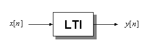
Convolution is an operation from which you
can determine the output of a
known linear time-invariant (LTI) system to
an arbitrary input signal. Consider the LTI
system to the left with input x[n] and output y[n]. Simply put, convolution is the operation that we use to find
y[n] given x[n].
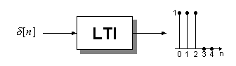
Let us set the input to be a
unit sample at the origin as shown in the figure to the right. For the particular
system in this example, the output is a pulse of length 3. When the input to a system is
an impulse we call the output the impulse response.
It is common practice to use the notation h[n] to denote the impulse
response. Therefore, y[n] = h[n] when the input is an impulse.
The particular system in this example has a length 3 pulse as its impulse response. This is not the case in
general; it was just a convenient choice used for illustration purposes.
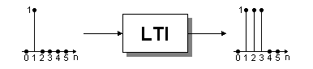What happens to the output of our system if the input impulse is shifted to a new location? The new output appears to be just a shifted version of the impulse response. But why? The reason is that we assumed the system was time-invariant. When a system is time-invariant, one can determine the response to a shifted input by the output of the unshifted version. In this case, the input is a shifted version of an impulse, so the new output is a similarly shifted version of the impulse response. We will see shortly that time-invariance is a very important property in the theory of convolution.
Now let's make the input the sum of three shifted impulses as shown in the following figure:
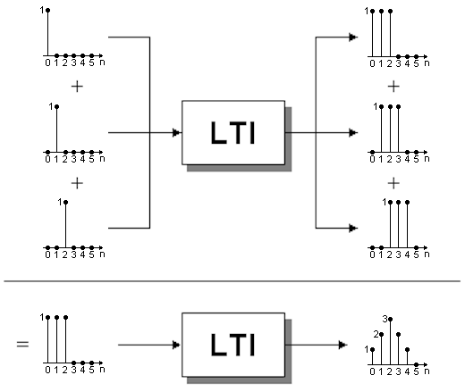
The triangularly shaped output is just the sum of the three shifted impulse responses. Why does it work this way? We know this works because we assumed that the system was linear. When a system is linear the output of a sum of inputs is the sum of their individual outputs. This is one of the two properties that define linearity. Next we will illustrate the second property of linearity. Then, with our understanding of linearity and time-invariance, we will see that we have gone 98% of the way to our ultimate goal of understanding convolution!
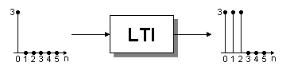The second property of linearity is illustrated by the figure to the left. The input is a scaled version of an impulse. In this case it is 3 times as large as our original impulse. The output is just the impulse response scaled by the same factor. The second property of linearity states that a scaling factor propagates from input to output.
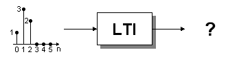We're almost there. Let us finally consider an arbitrary input: How can we find the output for this arbitrary signal? Well, we could break it up and write the input as a sum of scaled and shifted unit samples in a similar manner to what we did earlier. Then, to get the output for each of these scaled and shifted impulses we use the scaling property of linearity and the property of time-invariance. Finally, using the additive property of linearity we sum the individual outputs to get the total output. Below is a graphical view.
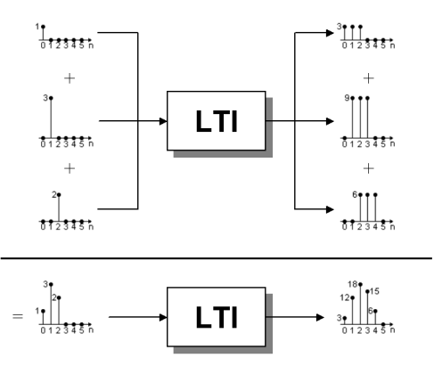
We just found the output for an LTI system given an arbitrary input. The process we used to find the output is called convolution! However, keep in mind that convolution is only guaranteed to get us the desired output when the system is LTI. The following summarizes the steps used in the discrete convolution operation:
Does it all make sense to you? If you are not sure go over it one more time before moving on with the rest of the tutorial.
If you still do not get it, let me know what is confusing you. Send me mail by clicking on my name in the Overview section. I want to make this tutorial understandable and any feedback is appreciated!
Now that we understand how convolution works let us write the operation in the more compact (and at least to most people, more confusing!) language of mathematical equations. Hopefully, this section will provide a meaning to the equations so when you look at the math you see convolution and not just a bunch of variables.
We saw earlier that an arbitrary input signal can be written as a sum of scaled and shifted impulses. To illustrate this, lets continue using our example input signal and write it out using mathematical formulas:.
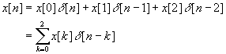
The x[k] terms are the scaling factors. In our example, x[0] = 1, x[1] = 3, and x[2] = 2. The δ[n-k] are the shifted impulse functions. The equation states that any signal can be written as a sum of scaled (the x[k] terms) and shifted impulses (the δ[n-k] terms).
According to the convolution operation the output of an LTI system is the sum of similarly scaled and shifted impulse responses:
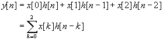
The x[k] terms are the same scaling factors as above. Because of linearity these values which scaled the shifted input impulses scale the shifted impulse responses as well. Remember that h[n-k] is the notation we use to denote a shifted impulse response. If we add all of the scaled and shifted impulse responses together we get the desired output of the system y[n].
The equation above was specific to our example input signal which only had three nonzero values. An arbitrary signal might be infinitely long. Thus, in general, we would need an infinite sum. Here is the final equation for convolution:
| CONVOLUTION: | 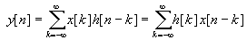 |
You are probably saying to yourself, "I understand the first equality, but where did the second equality come from?" The second equality is derived by making a simple substitution of variables in the first equality. The fact that the two are equal tells us that convolution is commutative.
Compare the convolution equation to the pictures in the Theory in Words section and try to see how they both say the same thing.
The part of convolution that seems to confuse most people is how to calculate it. The method in the previous sections is a perfectly valid method of evaluating a convolution. However, another method is more popular since it makes determining a convolution easier when formulas are given for x[n] and h[n]. This other method is also the method that I have created the MATLAB convolution tool to help explain. You should follow along in the tool for this:
To start, toggle the Plot Options/Tutorial Mode menu and make sure the Flip h[n] radio button is checked. The Output plot box should disappear and be replaced by a Get Output button. Now click the Get x[n] button. A new window should be created and a pulse signal displayed. Click the OK button to import this signal into the main window without changing any of its parameters. Do the same with the Get h[n] button and import the identical signal for the impulse response.
Now before clicking the Get Output button, let's work out the correct answer for y[n] at n = 0. According to the convolution formula above we need to calculate
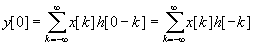
Examine the inner summation. We need to write both x[n] and h[n] as functions of k. We also need to flip the impulse response (because of the h[-k]). This flipping is automatically done for you in the MATLAB convolution tool. However, the default is to use n = -5 instead of n = 0 as in our example. To fix this drag the n index label or use the numeric 6 key to change the index until it reads n = 0. The signal and the flipped impulse response should only overlap at the origin. Note that the axis variable is k and that n is a constant which lets you know where to shift the flipped impulse response.
According to the formula above, we must multiply x[k]h[-k] and then add up all the terms in the resulting output. In the Multiplication plot box the result of this multiplication is shown. Since the two signals only overlap at the origin, there is only 1 nonzero sample in the multiplication result and it has a value of 1. Note again, that the axis variable is k not n
Go ahead and click the Get Output button. The output y[n] is a triangular waveform. The sample at n = 0 is highlighted and its value should equal 1 just as we calculated above. Now move the n index so that n = 2. We are now finding
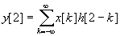
The Signal / Flipped Signal plot box displays x[k] and h[2-k]. The multiplication plot box shows the point by point multiplication x[k]h[2-k]. If we add all the values in the multiplication plot box we see that the sum equals the value at n = 2 in the Output plot box, or y[2].
Let's summarize the procedure. To calculate the output y[n]:
Now experiment with the MATLAB convolution tool by picking different signals and see if you can guess the answer ahead of time!
One last thing. The roles of x[n] and h[n] can be interchanged since convolution is commutative. That is you can flip either signal and the result remains the same. You can test this within the MATLAB tool by using the Flip x[n] / Flip h[n] buttons.
One common pitfall is dealing with signals that are delayed. It is no different then normal, but I have seen so many students make the same mistake when doing problems of this kind that I thought it was worth mentioning. Let's use the tool to illustrate the common mistake. As above use the Get x[n] / Get h[n] to import a pulse signal into the main window, however, this time use the controls along the right side of the dialog window to set the delay of each pulse to 3 before hitting the OK button.
Now move the n index so that n = 0. There is no overlap of the two signals! If this was a surprise to you then you fell into the trap. When the impulse response is delayed (or advanced), the n index does not always line up with the edge of the flipped impulse response. You have been warned, do not let yourself fall into this trap!